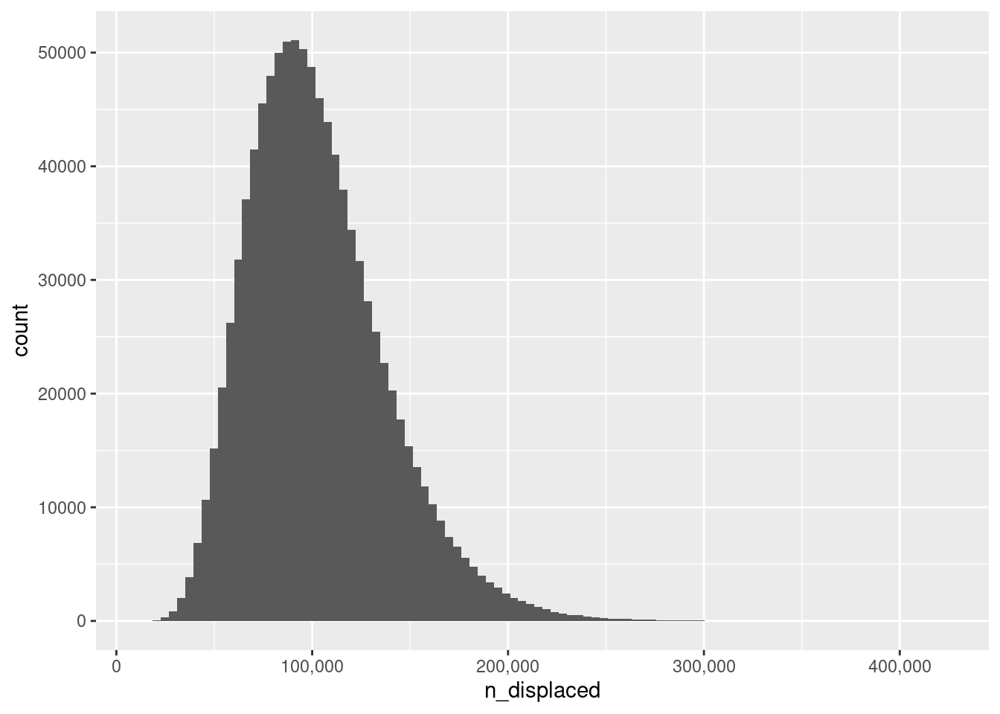

![]()
qbeta(c(.025, .975), 14, 167)[1] 0.04317318 0.12033578June 15, 2023
https://www.erininthemorning.com/p/us-internal-refugee-crisis-130-260k
The data source is this article:
https://www.dataforprogress.org/blog/2023/6/8/lgbtq-adults-do-not-feel-safe-and-do-not-think-the-democratic-party-is-doing-enough-to-protect-their-rights
From the pdf file embedded at the bottom of the page, the point estimate suggests 8% of trans people in the United States have been forced to migrate interstate. However, the weighted N associated with that point estimate is only 166 (because sampling trans people is hard). Without knowing much about the details it’s hard to be sure of the right way to construct an uncertainty estimate, but if we use a simple beta-binomial model
\[ \begin{array}{rcl} \theta & \sim & \mbox{Beta}(1, 1) \\ n & \sim & \mbox{Binomial}(\theta, N = 166) \end{array} \]
then – treating the data as if it were a simple random sample with \(n = 13\) out of \(N = 166\) respondents having been forced to move – our posterior over the proportion of displaced trans people would be a Beta(14, 167) distribution and our 95% equal tail credible interval would be:
Okay so the data somewhere between 4% and 12% of all trans people in the United States have been internally displaced as a consequence of the deluge of anti-trans legislation in the last few years.1 How many people is that, really? For this we can use a relatively recent survey by the Williams Institute. The webpage provides point estimates in a digestible form, but Table A4 of the associated pdf report includes a 95% credible interval that suggests the US trans population is somewhere between 816,644 and 1,964,330 people. Or, to express it as a percentage somewhere between 0.32% and 0.77% of the US adult population of 255,201,250 persons.
Next, since this is only a back-of-the-envelope style calculation, I’ll make another crude assumption and pretend I can treat these intervals as if they reflected two independent variables. Using my beta-binomial model I already have a posterior that I can sample the proportion of displaced trans persons from, but I don’t have anything like that for the proportion of the population that is transgender. In a kinder world I’d be able to take the intervals from the Williams study and pretend those intervals reflect a normal distribution, but not viable here, not even as a back-of-the-envelope calculation. The proportions are too close to zero. Instead, I’ll use a beta distribution, choosing parameters such that the relevant quantiles approximately mirror the numbers from the Williams Institute study:
2.5% 50% 97.5%
0.003193342 0.005125918 0.007695911 It’s awfully crude, but good enough for the back of an envelope calculation I’d say.
sim <- tibble::tibble(
n_adults = 255201250,
prop_trans = rbeta(1000000, shape1 = 20.3, shape2 = 3880),
prop_displaced = rbeta(1000000, shape1 = 14, shape2 = 167),
n_displaced = n_adults * prop_trans * prop_displaced
)
library(ggplot2)
ggplot(sim, aes(n_displaced)) +
geom_histogram(bins = 100) +
scale_x_continuous(labels = scales::label_comma())
So… how many transgender people within the United States do we estimate have already been forced from their homes as a consequence of the dire political climate there? Here’s the headline number:
That’s… a lot. There aren’t many of us. We are a small population and this is a humanitarian disaster for transgender people in the United States. It’s something that has been building for several years now, and every trans person knows it.
The precise scale of the disaster isn’t entirely obvious. The point estimate of 100,000 people could be out by a factor of 2 in either direction, which you can see by calculating the 95% credible interval:
Between 48000 and 185000 transgender people have been displaced. At some point the rest of the American population will start to actually do something about this, right? I mean, something other than make it worse or waste your time and effort by whining about the threat to society posed by trans women in sports.
You could do the same thing in a frequentist way, of course, but that would be no less crude than this method, and anyway I did that and got essentially the same answer.↩︎
@online{navarro2023,
author = {Navarro, Danielle},
title = {On Living in Dark Times},
date = {2023-06-15},
url = {https://blog.djnavarro.net/posts/2023-06-15_dark-times},
langid = {en}
}